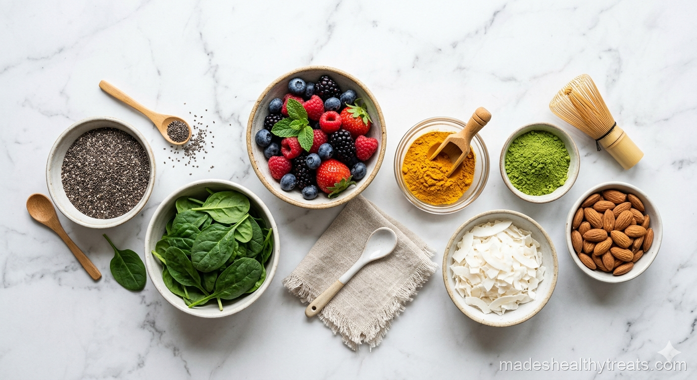

I used to buy every trendy smoothie powder that promised glowing skin, perfect energy, and a brand new personality by noon. Most of them ended up pushed to the back of the cabinet. Over time, I learned that the best smoothie boosters are the ones that taste good, make sense, and fit into real mornings. My favorites are simple, colorful, and easy to keep on hand.
The Ones I Reach For Most
Chia seeds are my first love because they thicken a smoothie and add fiber without changing the flavor much. Ground flaxseed is another quiet hero, especially in berry blends where its nutty taste disappears beautifully. Matcha is what I use when I want gentle focus, and cacao is what I add when breakfast needs to feel cozy.
For fruit based smoothies, I love acai, blueberries, mango, and pomegranate juice. They bring color and flavor first, which matters to me. If an ingredient is only healthy but tastes miserable, I know I will not keep using it.
Greens That Do Not Make Smoothies Weird
The best superfood is the one you understand, enjoy, and actually use.
Spinach is the easiest green to blend because it practically vanishes. I use big handfuls in detox smoothies and never feel like I am drinking a salad. Kale can work too, but I save it for stronger flavors like pineapple, lemon, and ginger.
Fresh herbs deserve more attention. Mint makes watermelon taste colder and cleaner. Basil with strawberry is beautiful. Cilantro can be wonderful with pineapple and lime if you like a greener flavor.

How I Keep It Practical
I keep chia, flaxseed, cacao, and matcha in clear jars near my blender. Frozen berries and mango stay in the freezer. Ginger coins live in a small bag so I never have to peel ginger while half awake. That little setup makes healthy choices feel easy instead of dramatic.
The trick is not to add everything at once. Pick one or two boosters that support the flavor you already want. Smoothies should still taste like food, not a supplement drawer.
Made's Note
Start with one new ingredient this week and let yourself learn it. Healthy food gets easier when your kitchen starts feeling like a friend.